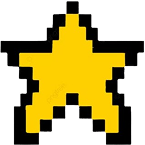
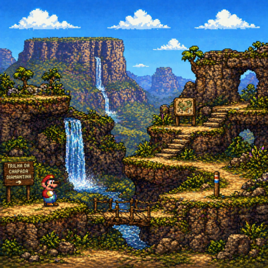
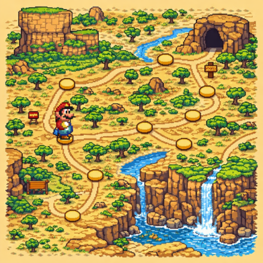
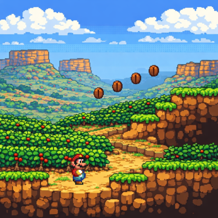

Lençóis
Principal base turística da Chapada, com boa estrutura e acesso a vários atrativos.

Prepare-se: trilhas desafiadoras, cachoeiras gigantes e vistas que valem cada passo.
A Chapada Diamantina não é só um Destino. É praticamente um mundo inteiro dentro da Bahia.
Antigamente marcada pelo garimpo de diamantes, hoje sua maior riqueza está nas cachoeiras, grutas, trilhas e paisagens impressionantes.
E cada cantinho tem uma experiência diferente: aventura, história ou simplesmente um lugar tranquilo pra curtir a natureza. Aqui, cada caminho parece levar para uma nova fase!


Principal base turística da Chapada, com boa estrutura e acesso a vários atrativos.

Destino cercado de natureza, trilhas marcantes e clima alternativo.

Base para cachoeiras impressionantes, incluindo algumas das mais famosas da Chapada.

Região rica em história e acesso a cenários marcantes como Igatu e trilhas naturais.

Cidade charmosa e histórica, com arquitetura marcante e acesso a belas paisagens.



Experiência massa demais! O roteiro foi certeiro e deu pra curtir a vibe da Bahia de um jeito muito autêntico. Nota dez!!
Muito irado! Bem organizado e com aquela energia que só o nosso estado tem. Valeu muito a pena!
Melhor escolha que fiz! Guia top, lugares incríveis e uma recepção diferenciada. Já quero planejar a próxima!